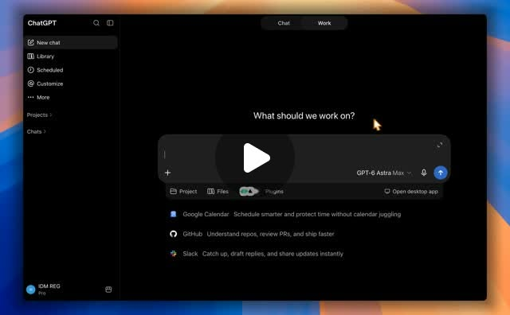

Threads｜OpenAI Writing style：讓 ChatGPT 參考個人文字習慣的寫作風格功能

一句話摘要
Writing style 的核心不是讓 AI「假裝成你」，而是讓模型在你授權的資料範圍內，參考既有文字的語氣、用字與節奏，減少每次重新交代寫作偏好的成本；但連接郵件、雲端硬碟或工作協作工具前，必須先確認資料權限與使用範圍。
來源脈絡
本篇整理自 Prompt Case（@prompt_case）的 Threads 貼文。貼文指出，OpenAI 推出「寫作風格」功能，並提到可連接 Gmail、Google Drive、Notion、Slack、SharePoint 等工具，從過去的電郵、訊息與文件中理解使用者常用字詞、語氣、句子節奏、結尾習慣，甚至大小寫等個人書寫特徵。
貼文提供的設定路徑是：`Settings → Personalization → Writing style`。由於官方 Help Center 在本次自動查證時未能正常提供可讀頁面，本文將貼文所述功能定位為「來源分享與待確認的新功能」，不把所有細節寫成已對所有帳號正式開放的保證。
功能概念
### 從指令式風格到範例式風格
傳統做法是直接告訴 ChatGPT：「請用我的語氣寫，句子短一點、少用形容詞、結尾要有行動呼籲。」Writing style 的方向則可能改為讓系統從使用者過去的文字樣本中，歸納出較穩定的風格特徵。
可被參考的特徵可能包括：
- 慣用詞與用字選擇
- 句子長短與節奏
- 開頭、轉折與結尾習慣
- 標點符號與大小寫偏好
- 正式、口語、幽默或簡潔程度
- 特定工作情境下的格式習慣
### 可能的工作流
若功能與貼文描述一致，使用情境可以是：先授權特定資料來源，再讓 ChatGPT 產生草稿，最後由使用者檢查事實、語氣與敏感資訊。它適合減少重複設定，不代表使用者可以跳過編輯與審核。
為什麼值得注意
這個方向把個人化從「記住幾條偏好」推進到「理解一組長期寫作樣本」。對內容創作者、教師、研究者與需要大量產製文字的人來說，價值可能在於：
- 降低每次描述語氣與格式的成本。
- 讓不同工作情境維持較一致的個人品牌。
- 讓草稿更接近平常的用字與節奏。
- 把個人風格規則與實際寫作樣本結合。
但「更像本人」不等於「一定更好」。如果歷史文件中有過時觀念、錯誤資訊、情緒性語言或不應外流的資料，模型學到的也可能是那些問題。
連接前的隱私與權限檢核
Gmail、Google Drive、Notion、Slack 與 SharePoint 可能包含個資、公司機密、客戶資料、內部對話與尚未公開的文件。建議採取最小權限與分層測試：
- [ ] 先確認實際連接的是哪些資料夾、頁面、頻道或帳號。
- [ ] 優先使用專門的寫作樣本資料夾，不要一開始開放整個信箱或 Vault。
- [ ] 先移除個資、密碼、API 金鑰、合約與機密內容。
- [ ] 確認資料會被如何使用、保存多久，以及如何停用或撤銷連接。
- [ ] 釐清「參考風格」與「讀取內容」的權限是否可以分開控制。
- [ ] 產出前後檢查是否不小心複製了原始文件中的敏感內容。
- [ ] 對公開文章仍進行事實查核與人工改稿。
與 Markdown 個人知識庫的搭配
欒帥目前採用本地 Markdown 知識庫，這類本地、可版本控制的寫作樣本其實很適合作為風格資產：可以明確挑選哪些文章代表目前風格，也能透過 Git 保留版本與刪除歷史內容。
較穩定的做法是建立一份「寫作風格規格」：
- 常用語氣與稱呼
- 段落長度與標題層級
- 禁用詞與容易誤解的表達
- 引用、連結與查證格式
- 不同渠道的字數與格式限制
- 3–5 篇經人工確認的代表作品
如此一來，Writing style 功能即使尚未開放或日後變更，也不會讓個人風格完全依賴單一平台。
查證狀態與限制
- Threads 分享連結已解析至 Prompt Case 的原始貼文。
- 貼文內容與設定路徑已保存為來源證據。
- 官方 Help Center 在本次擷取時回傳不可讀的錯誤頁，尚未能從官方文件獨立確認完整功能規格。
- Gmail、Google Drive、Notion、Slack、SharePoint 的可用範圍、方案限制、地區 rollout、資料保留與訓練用途，應以使用者帳號實際顯示及 OpenAI 最新官方文件為準。
原始連結
- Threads 分享：https://www.threads.com/share/BAWveCekRB/
- Threads 原始貼文：https://www.threads.com/@prompt_case/post/DdBi4_KjSxE
- OpenAI ChatGPT Release Notes：https://help.openai.com/en/articles/6825453-chatgpt-release-notes
- OpenAI Custom Instructions 說明：https://help.openai.com/en/articles/8096356-chatgpt-custom-instructions